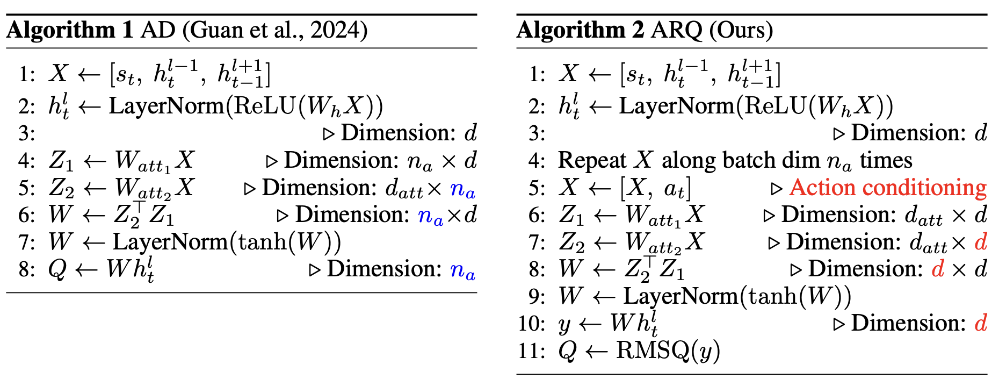

Method
Inspired by the Forward-Forward algorithm's goodness function using layer activity statistics, we propose Action-conditioned Root mean squared Q-Function (ARQ), a simple vector-based alternative to traditional scalar-based Q-value predictors designed for local RL.
ARQ is composed of two key ingredients:
- RMS Goodness Function: We extract value predictions from a vector of arbitrary size by computing the root mean squared (RMS) of the hidden layer activations: \(g_l = \sqrt{\text{mean}(h_l^2)}\). This significantly improves expressivity by allowing more neurons at the output layer without sacrificing the backprop-free property.
- Action Conditioning: We insert an action candidate at the model input, enabling the network to produce representations specific to each state-action pair. This unleashes the capacity of the network compared to prior local methods that relied on dot-products between learned mappings.
ARQ can be readily implemented on top of Artificial Dopamine (AD), taking full advantage of their non-linearity and attention-like mechanisms while maintaining biological plausibility.

